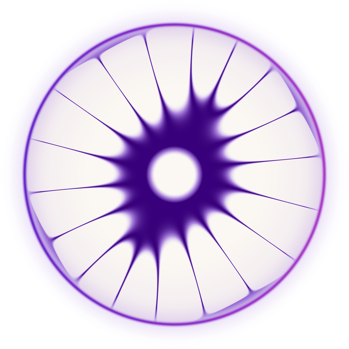
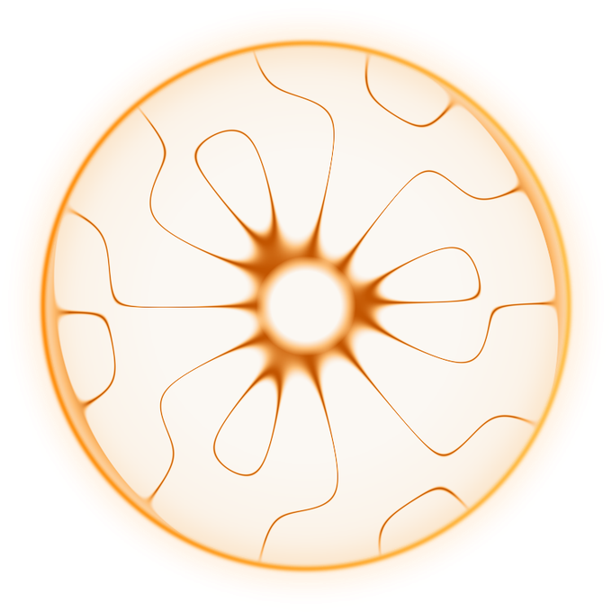

You've read your chart for years. You've never actually heard it.
Your chart isn't only information. It's also a sound. At the moment this chart was drawn, four frequencies were set: one for identity, one for connection, one for energy, one for opportunity. We don't give you your horoscope. That's just the input. We give you your bands, a read you've never seen. And below, for the first time, the sound itself.

Increases identity coherence and aligns you with your true purpose.
You make sense of who you are through a sense of stability and steadiness. You know yourself when you feel anchored; identity confusion clears when you return to a grounded state.
Now hear it.
A real immersion, sampled. Headphones or any decent speaker.
You are free to roam while it plays. No meditation or special practice required.

Expands magnetism, attunement, and connection.
You experience connection through shared motion. You make sense of your bonds through what you are doing together and the generative energy between you.
It lets you finally feel the parts of yourself you have only ever read about.

Keeps your energy clean and steady.
You experience vitality through action. You make sense of your energy through your capacity for drive; you are recharged by the act of starting.

Aligns your timing with prosperity, opportunity, and exchange.
You metabolize opportunity through the named ask. You recognize the right timing when you can voice the exchange; naming it is what moves the energy.
It clears. It resonates. Over time, it holds. From January 2025 to January 2026, 300 people listened to Zodiac and answered 6 open-ended questions every two weeks. Here's what they experienced:
Results from the as-designed cohort: 9+ minutes per day with Frequency Balance.
You might not feel much at first. A lot of people don't. They just notice, a few weeks in, that things are landing differently.
Oh there you are, Hilary. I found you.
If you think this sounds hocus-pocus or slightly woo-woo: I get it. I thought so too. Still. It gives me something.
Look, I was the biggest skeptic ever. But the way opportunities keep showing up is getting weird.
Zodiac core frequencies translate this unique imprint into sound, bypassing the mind and speaking directly to the body.
Nine minutes a day, embedded in high-quality music. Headphones, any decent bluetooth speaker, or a car stereo will work. No rearranging your schedule.
Just listen for 9 minutes a day. If you don't experience undeniable life changes, you get a full refund, no questions asked. 90 days to decide on the annual plan, 30 days on the shorter plans.
Subscriptions renew automatically. Cancel anytime via the app or support@zodiac.fm.
You give up nothing. Your readings, your Human Design, your meditation, they all land deeper when it's the real you doing them.